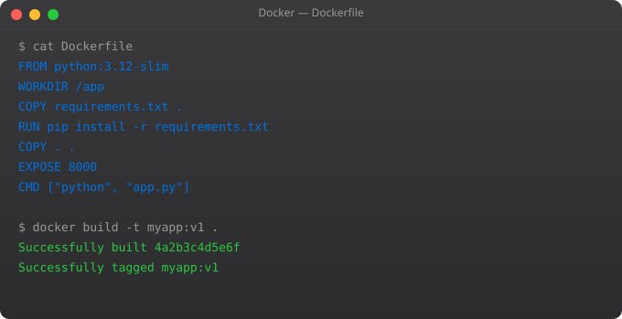

Containers are designed to be disposable. You delete them, recreate them, and they start fresh. This is a feature — it means deployments are predictable and repeatable. But it creates a problem: what about data that needs to survive? Databases, uploaded files, logs, user data — none of these can afford to be wiped every time a container restarts.
Docker solves this with Volumes. A volume is storage that exists outside the container's filesystem, managed independently of the container lifecycle. The container can be deleted and recreated, but the volume — and all the data in it — persists untouched.
Docker has three mechanisms for handling data.
Volumes are the recommended way to persist data. Docker manages them — they live in Docker's storage area, have their own lifecycle, can be named, backed up, and shared between containers. On Linux, they live at /var/lib/docker/volumes/.
Bind mounts map a directory from your host machine directly into the container. The files exist on your host filesystem and are simply accessible inside the container at the specified path. Best used in development to sync source code changes without rebuilding images.
tmpfs mounts store data in the host's memory, never on disk. Data is lost when the container stops. Used for sensitive data that should not be written to disk (secrets, tokens) or for temporary high-speed storage.
# Create a named volume
docker volume create my-app-data
# List all volumes
docker volume ls
# Inspect a volume (see where it's stored)
docker volume inspect my-app-data
# Run a container with a named volume
docker run -d --name my-nginx -v my-app-data:/usr/share/nginx/html nginx
# Write data to the volume
docker exec my-nginx sh -c "echo 'Hello Volume' > /usr/share/nginx/html/index.html"
# Delete the container
docker rm -f my-nginx
# Create a NEW container mounting the SAME volume
docker run -d --name my-nginx-2 -v my-app-data:/usr/share/nginx/html nginx
# Verify the data persisted
docker exec my-nginx-2 cat /usr/share/nginx/html/index.html
# Output: Hello Volumedocker run -d --name postgres-db -e POSTGRES_USER=myuser -e POSTGRES_PASSWORD=mypassword -e POSTGRES_DB=myapp -v postgres-data:/var/lib/postgresql/data -p 5432:5432 postgres:15
# Connect and create some data
docker exec -it postgres-db psql -U myuser -d myapp
# CREATE TABLE users (id SERIAL, name TEXT);
# INSERT INTO users VALUES (1, 'Suraj');
# \q
# Delete the container
docker rm -f postgres-db
# Start a new container with the same volume
docker run -d --name postgres-db -e POSTGRES_USER=myuser -e POSTGRES_PASSWORD=mypassword -e POSTGRES_DB=myapp -v postgres-data:/var/lib/postgresql/data -p 5432:5432 postgres:15
# Your data is still there
docker exec -it postgres-db psql -U myuser -d myapp -c "SELECT * FROM users;"Bind mounts are perfect for development. You mount your source code directory into the container, so changes you make in your editor are immediately reflected inside the container — no image rebuild needed.
# Mount current directory into the container (Linux/macOS)
docker run -d --name dev-server -v $(pwd)/src:/app/src -p 3000:3000 my-node-app
# Windows PowerShell
docker run -d --name dev-server -v ${PWD}/src:/app/src -p 3000:3000 my-node-app
# Any change you make to files in ./src on your machine
# is immediately visible at /app/src inside the container# List all volumes
docker volume ls
# Remove a specific volume (must not be in use)
docker volume rm my-app-data
# Remove ALL unused volumes (not attached to any container)
docker volume prune
# Back up a volume to a tar file
docker run --rm -v my-app-data:/source -v $(pwd):/backup ubuntu tar czf /backup/volume-backup.tar.gz -C /source .
# Restore a volume from backup
docker run --rm -v my-app-data:/target -v $(pwd):/backup ubuntu tar xzf /backup/volume-backup.tar.gz -C /targetIn Part 5, we tackle Docker Networking — how containers find and communicate with each other, how to create isolated networks for security, and how port mapping actually works under the hood. This is essential knowledge for running multi-container applications.
By default, all data written inside a container's filesystem is lost when the container is removed. This is why containers are called ephemeral. To persist data across container restarts and deletions, you must use Docker Volumes or bind mounts which store data outside the container's writable layer.
Docker Volumes are managed by Docker and stored in Docker's storage area on the host (/var/lib/docker/volumes). They are portable, can be backed up easily, and work on all platforms. Bind mounts map a specific host directory into the container. Use volumes for production data persistence and bind mounts for development to sync source code.
Mount a named volume to PostgreSQL's data directory: docker run -v postgres-data:/var/lib/postgresql/data postgres:15. The volume persists all database files independently of the container. Even if you delete and recreate the container, it connects to the same volume and finds all existing data.
Yes. Multiple containers can mount the same volume simultaneously. This is useful for sharing data between containers — for example, an application container writing files that a backup container reads. Use this with caution for write access since concurrent writes can cause conflicts without proper locking.
Named volumes are stored in /var/lib/docker/volumes/ on Linux. Each volume has its own subdirectory. On macOS and Windows with Docker Desktop, volumes are stored inside the Docker Desktop VM, not directly on the host filesystem. Use docker volume inspect volume-name to see the exact mount path.